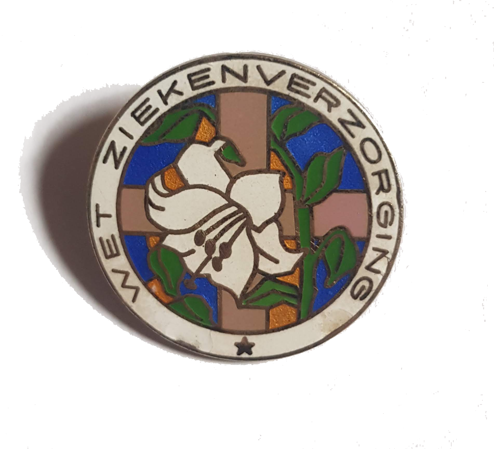
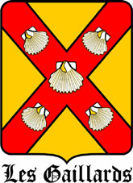

Waakster
WaaksterWaken kan ruimte maken
Loopbaan

Eigenlijk blijf ik mijn hele leven leren en zegt mijn loopbaan weinig over wie ik nu ben. Voor belangstellenden staat hier een globaal overzicht van mijn ervaring in de humane gezondheidszorg.
Vanaf mijn jeugd heb ik mij als vrijwilliger ingezet rond veterinaire zorg. Sinds 2005 volg ik cursussen in die richting.
In 2010 volgde ik bij Michelle Vrolijk, hondengedragsdeskundige, de eerste workshop 'door de ogen van de hond'. Een intensieve stageperiode volgde.
Vanaf 2018 assisteer ik bij de opleidingen pijn bij honden.
Vanaf 2019 ben ik aangesloten als pijn coach.
Humaan bijstaan voorbij fysieke pijn is mijn specialisatie sinds 1978.

Dagblad Trouw 30 november 2001:
Sterven mag in vakantie zorghuis.
Sinds 2010 lijdt Aristos aan twee potentieel terminale aandoeningen. Daarom is de stichting Mijnsheerenland vanaf 2016
slapende.
Een deel van het bijzondere werk van Les Gaillards is vastgelegd in de documentaire
Als ALS alles lam legt
die soms educatief ingezet wordt bij extra verdiepingsmodules.
Verpleegkundigen uit Vichy, Frankrijk, waren diep onder de indruk.
Voor een aantal Nederlandse artsen bleek het werk van Les Gaillards ook verruiming van eigen kijk.
Les Gaillards
Sinds 1997 voel ik mij betrokken bij Les Gaillards waar ik verschillende malen in training ben geweest. Ruime samenwerking volgde.
Hieruit ontstond een warme vriendschap met Aristos Bouïus en Gerrit Schelling, de buitengewone initiatiefnemers.
Dankbaar en trots ben ik dat ik sinds 2014 het 'Gaillards vaandel' op mijn visitekaartje mag voeren. Het voelt voor mij heel natuurlijk om zo 'onder de vlag' van Les Gaillards mijzelf kenbaar te maken.
Bijzonder, omdat ik mijzelf onder geen enkele vlag schaar. Dat is nu precies wat ik meekreeg van Les Gaillards:
(-: Blijf JeZelf :-)
Verpleegkundigen uit Vichy, Frankrijk, waren diep onder de indruk.
Voor een aantal Nederlandse artsen bleek het werk van Les Gaillards ook verruiming van eigen kijk.